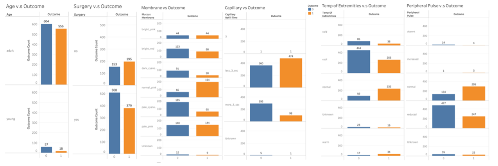
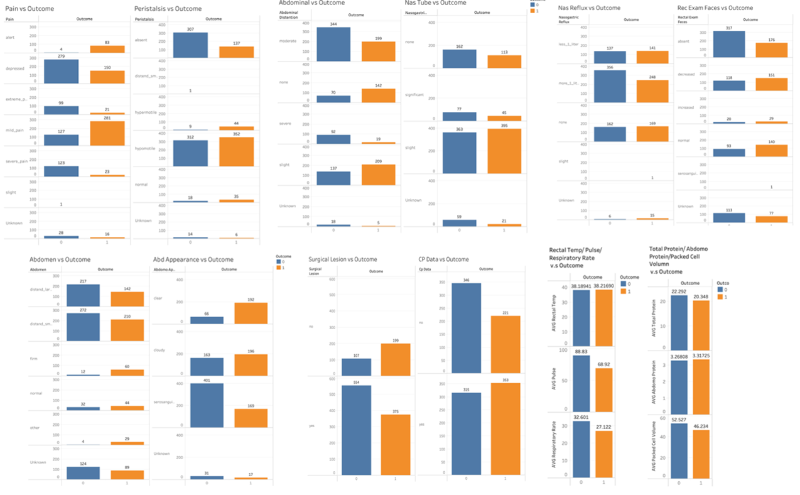
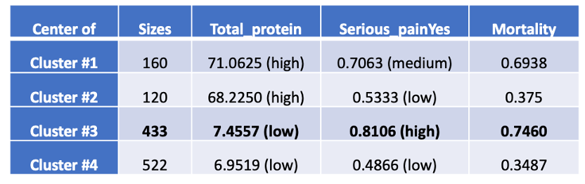
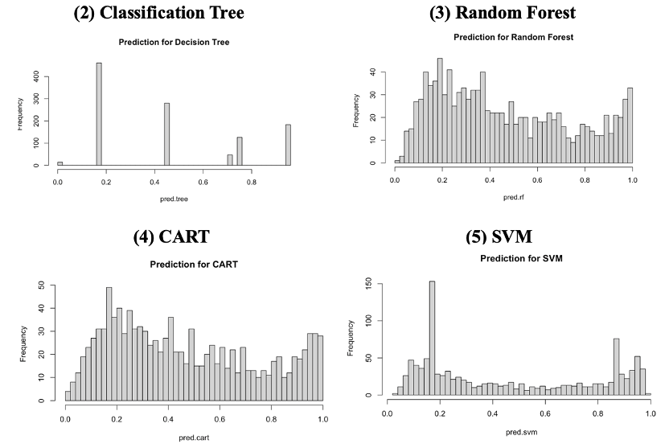
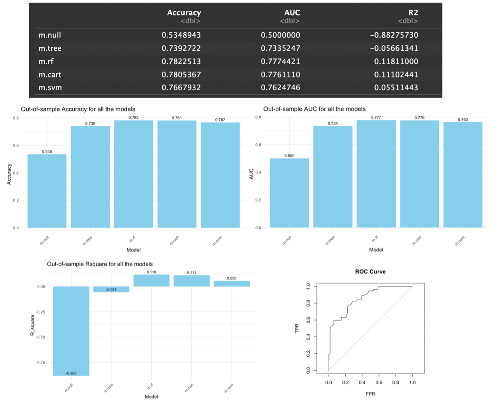
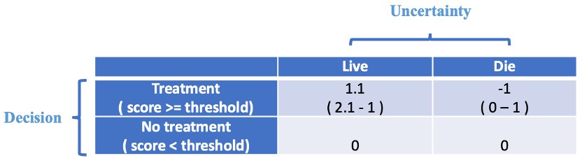
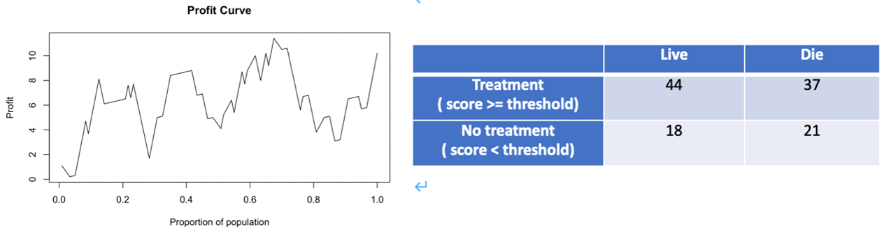
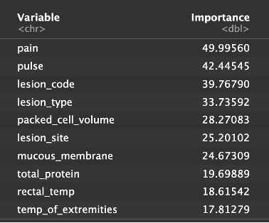

Health Status Prediction for Horses
Business Understanding
Business Background
The prediction of health outcomes for horses is a vital endeavor within the realm of equine management and veterinary care. Horses, whether they are involved in racing, breeding, sports, or simply companionship, are cherished and valuable animals.
The equine industry is a significant part of the agricultural and recreational sectors in many countries. Horses are used for various purposes, including racing, breeding, riding, and as companions. And for animal welfare part, ethical considerations and legal regulations often require owners and caretakers to provide proper care for horses. Ensuring the health and well-being of horses is critical to the success and sustainability of this industry. Predicting health outcomes helps in early intervention, reducing suffering, and maintaining compliance with animal welfare laws. Besides, from the financial perspective, horses are valuable assets, and their health can have a substantial financial impact on owners, breeders, and trainers. Accurate predictions of health issues can prevent costly treatments, reduce the risk of losing valuable horses, and improve overall financial management.
Causes for the Death of Horses
• Surgery: Yes/No
• Age
• pain level
• health condition (e.g. pulse, peripheral pulse, respiratory rate, abdomen)
• lesions condition, …
Key Objectives
• Reduce the Death Rate of Our Horses
• Identify the horses with probabilities of death around 0.5, provide special care for them.
Deployments
• Provide appropriate treatment based on abnormal physical data for the horses
• Hire specialized veterinarians for horses
• Upgrade medical equipment, ……
DATA Understanding
The data used is from a competition of Kaggle. It provides three datasets, training set, test training set and the outcome set. In training set, it has 1235 observations (number of horses in the data) and 29 variables are presented, including 28 independent variables and the target variable “outcome”), which is the health status of horses (lived / enthanized / died).
The training dataset includes the horse's physical data (like age, pulse, etc.) and health data (like temperature, pain degree, surgery, etc.). Different horses in different age range are with different health conditions, and horses in similar physical conditions are likely to have similar health status. From these data, we can gain a basic understanding of horses’ health and physical conditions. We would develop a model to predict the probability of death for our horses. We would provide appropriate treatment for the target segments of horses. In this way, their survival probability would increase and they would generate more future profits for us. The specific treatment we provide to horses will be based on the significance of variables.
Data Source: https://www.kaggle.com/competitions/playground-series-s3e22/data
Data Processing
Data Cleaning
• The columns ‘id’ and ‘hospital number’ are unique for each row and are attribute data that have no meaning in data analysis process, so we dropped these two columns.
• Some faults exist in “lesion_1”, “lesion_2” and “lesion_3” columns so we build 4 new variables(“lesion_site”, “lesion_type”, “lesion_subtype”, “lesion_code”) according to “lesion_1”, which contains the correct and necessary information.
• We transformed the 14 categorial variables from character into factor type.
• For all the 'None' (which is the missing values), we classified them into a new category called 'Unknow'; for all the 'none’, which are an available value indicating that nothing observed in that variables, we maintained these values.
• We only care about factors that influence the status of survival of horses, so we transformed our target variable ‘outcome’ into a dummy variable(1 for lived, 0 for enthanized / died).
Correlation Analysis
To observe the relationships between variables, we visualized the relationship of the target variable ‘outcome’ and each variable.

From the above visualization outcomes, we learned that surgery is likely to have a significant influence on outcome. The performance of outcome are different in two groups, which may indicate that horses with surgery are less likely to survive. Also, the performance of outcome is different between groups in different variables, like Extremities, Peripheral Pulse, Membrane and Capillary.

From the above visualizations, we learned that different features have different impact on outcome. Some are obvious, while some are obscure. Therefore, we developed different models to fit the prediction of outcome using above features and selected the best model, then analyzed features that are most impactful and devise strategies to improve the survival possibility of horses.
Additional Data Exploration: K-means
We applied k-means to find the segment with the highest death probability. From the result we learned that maybe we should target at the segment with serious pain and low total protein since it has the highest mortality.
Note: Serious_pain refers to the ‘pain’ equals to ‘alert’, ‘extreme_pain’, ‘severe_pain’ or ‘depresses’.

Modeling
Model Framework
Uncertainty: Alive / Dead (not alive)
Decision: decide which horses to provide treatment with extra costs (choose the threshold)
The decision of whether the horse is selected as our target horse is based on the P( Alive | X ), we would only select the horses with P( Alive | X ) within certain threshold that could generate highest profits for us.
Goal: maximize(t) E[ profit | Target(t), X]
= P( Alive | Target(t), X) * [V(Target, X) – C] - P( Not Alive | Target(t), X) * C
• X represents each horse
• t is the threshold, the horse that satisfies this threshold should be our target horse
• C represents the monthly costs of treatment
• V is the monthly value (revenues) of the horse from now on
Assumption:
• The profit of the project only considers the target horses
• The values and costs are all identical for each horse, which we will specify in the cost-benefit matrix later
• The horse that died could not generate any revenues, and the treatment costs we spent on it is nonrefundable
Subcomponents needed:
Probability of Alive, score of each horse (based on the probability we predict), expected profits of horses (cost-benefit matrix), optimize over threshold
Model Training
We choose the following models with 10-fold Cross Validation to predict the probability of alive:
(1) Null Model (benchmark)：
It predicts all the probabilities as 0.4653.

We did not choose logistic regression because the sizes of some groups in our categorial variables is extremely small, which would lead to new variables appearing in prediction.
Model Evaluation
We chose OOS Accuracy, Area Under Curve (AUC) and OOS Rsquare as our metrics to select model. We calculated the mean of each metric for 10 folds in cross validation, and we got the following results. From this result, we found that the Random Forest model generated the highest OOS Accuracy (0.7823), the highest AUC (0.7774) as well as the highest OOS Rsquare (0.1181). Therefore, we selected it as our final model and construct the model again with the whole training data for further prediction. We also plotted the ROC curve, which can help us determine the threshold that generate the highest expected profit.

DEPLOYMENT
Assign Scores
Since we have a budget for this project, we need to rank the horses based on their probability of death. We believe that horses with probabilities around 0.5 are the most valuable ones to provide treatment because their physical condition is at a critical point, and treatment is likely to help them survive and continue to create values. Horses with probabilities around 0 and 1 do not have treatment value. Horses with alive probabilities close to 1 are indicative of good health and do not require medical intervention, while horses with a probability near 0 are severely ill, so treatment may not be effective, resulting in unnecessary expenses. With this in mind, we set our Score as :
1 - | probability - 0.5| * 2
Score close to 1 means the alive probability of the horse is extremely close to 0.5, and score close to 0 means the probability is extremely close to 0 or 1.
Cost-Benefit Matrix
We will only treat horses with a score greater than a certain threshold. Assuming the monthly cost of treating each horse is $1k, and the monthly revenue generated by a living horse is $2.1 thousand. Our Cost-benefit Matrix will look as follows:

Profit Curve & Expected Profit
With this cost-benefit matrix, we can plot our profit curve based on our model based on the following formula:
E[profit | Target(t), X]
= P( Alive |Target(t), X) * [V(Target, X)–C] - P(Not Alive |Target(t), X) * C
We should provide treatment to the top 68% of horses with highest scores. Our threshold score is 0.31, and the corresponding range of predictive probability is from 0.156 to 0.835. In this situation, we got the confusion matrix, and our highest expected profit = 44 * 1.1 – 37 * 1 = 11.4k every month.

Significance of Variables
Now that we know which horses to treat for maximum profit, we also need to understand the specific treatments these horses require. We have identified the top 10 variables that have the most significant impact on the survival rate of horses, as follows:

In this output, “pain”, “pulse”, “packed cell column”, “mucous membrane”, “total protein”, “rectal temperature” and “temperature of extremities” are all physical indicators that are used to monitor the physical condition of horses. This reminds us that we should check the horse‘s daily health regularly. When one or more of these indicators deviate from the norm, they should be given special attention in relation to the other indicators. The variables “lesion code”, “lesion type” and “lesion site” are related to the condition of horses after the onset of an ailment. In addition to monitoring the daily physical indicators of horses, these variables play a significant role in determining the survival rate of horses after they become ill in terms of the treatment process and medical procedures. This suggests that when we detect that a horse is ill, we should promptly provide the appropriate treatment and continue to monitor the performance of these variables.
Risk Analysis
The risks our project will face include potential side effects from treatments, regulations related to changing animal health for commercial purposes, and the possibility that the model may overfit. We could mitigate these risks by conducting thorough pre-treatment, engaging with regulatory authorities and experts and collecting more training data for further model optimizing.